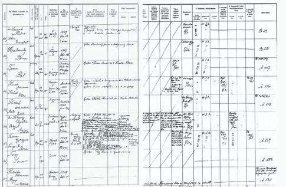
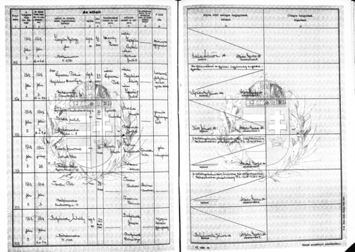

|
• Background • Database • Acknowledgements • Searching the Database |
The data set consists of two components: (1) the 1945-1951 register "halálesetfelvételi nyilvántartás" (death case register) the death declaration of Jews died in the times of the persecution and (2) I added the names I found on-line in "Family Search's" Death Register. By visiting the commemoration in my hometown of Békéscsaba, I made a side trip to the county archive in Gyula and during my visits I collected the names of some 833 Holocaust victim.


The list I am presenting contains less than the half of the about 2000 victims of Békéscsaba, as I realized, several names are missing, even from my close relatives. For instance, my uncle declared his wife dead, but not his 7 years old son József and his 3-month old Péter. My surviving cousin hasn't declared her father and mother, I have no explanation for the reason.
This data set consists of 833 entries. The fields for this database are as follows:
The information contained in this database was researched and compiled by Gábor Hirsch. The sources for the information are described in the “Background” section above.
In addition, thanks to JewishGen Inc. for providing the website and database expertise to make this database accessible. Special thanks to Avrami Groll, Warren Blatt and Michael Tobias for their continued contributions to Jewish genealogy. Particular thanks to Nolan Altman, Vice President of Data Acquisition and Coordinator of JewishGen’s Holocaust Database files.
Nolan Altman
Coordinator - JewishGen Holocaust Database
October 2018
This database is searchable via JewishGen's Holocaust Database.